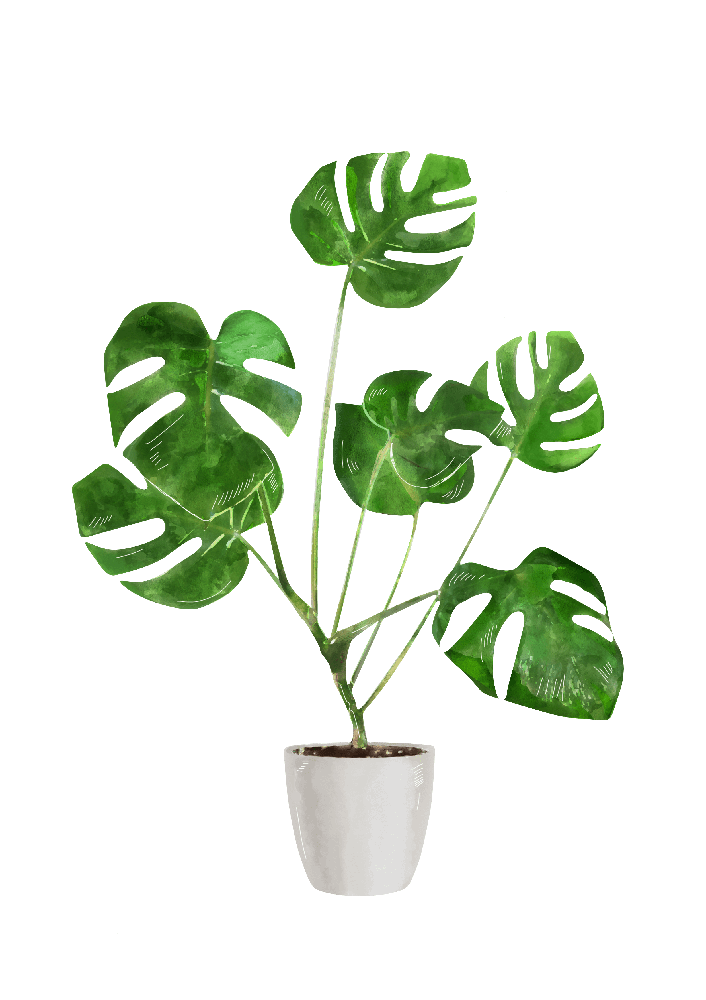
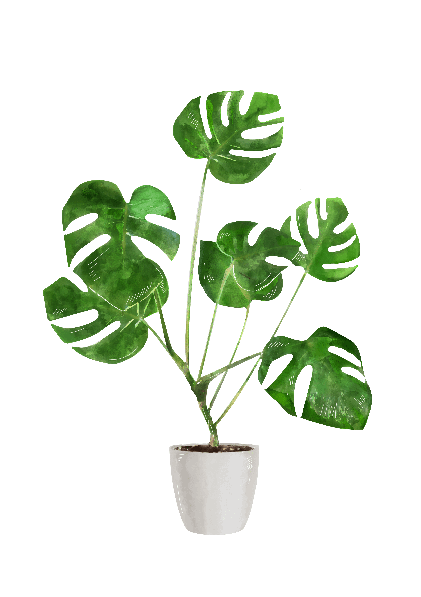
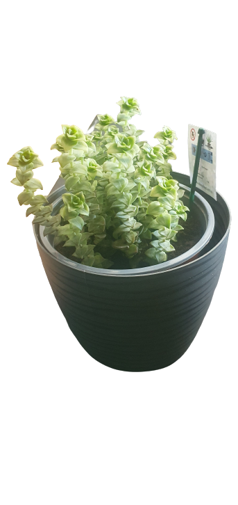
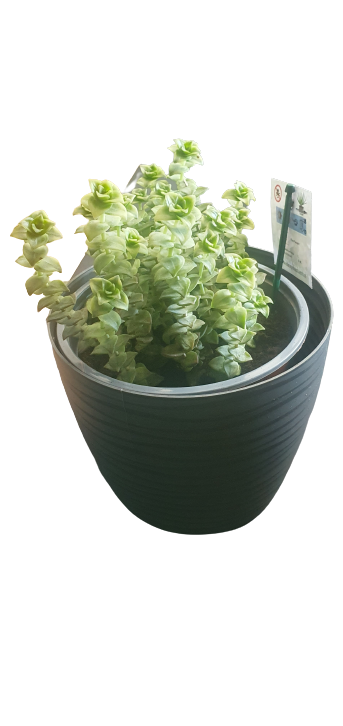
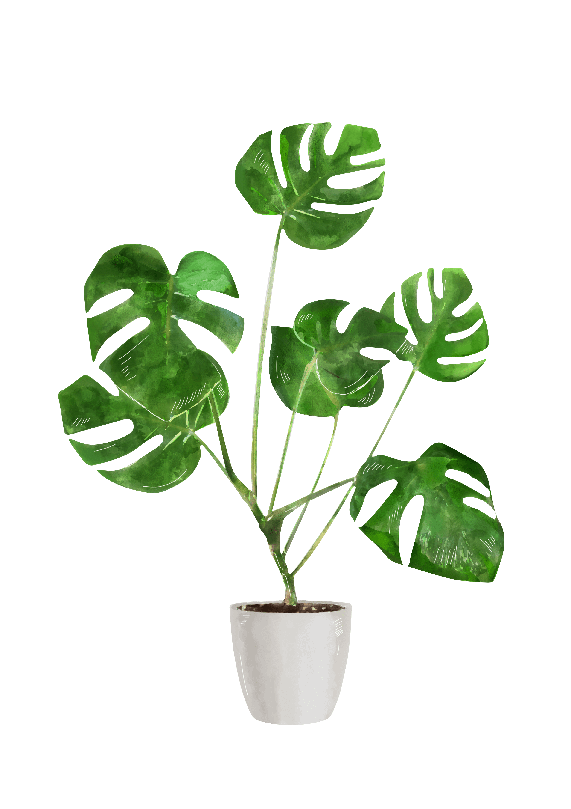
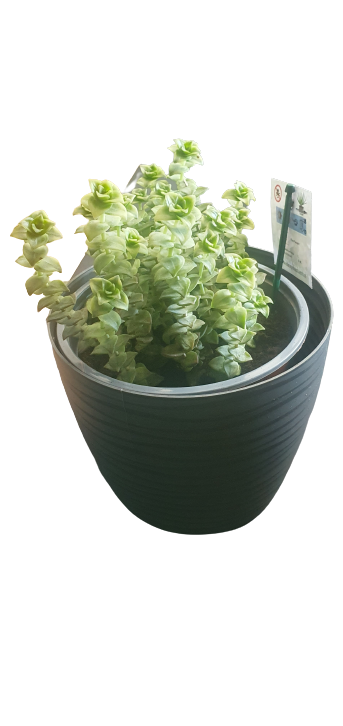
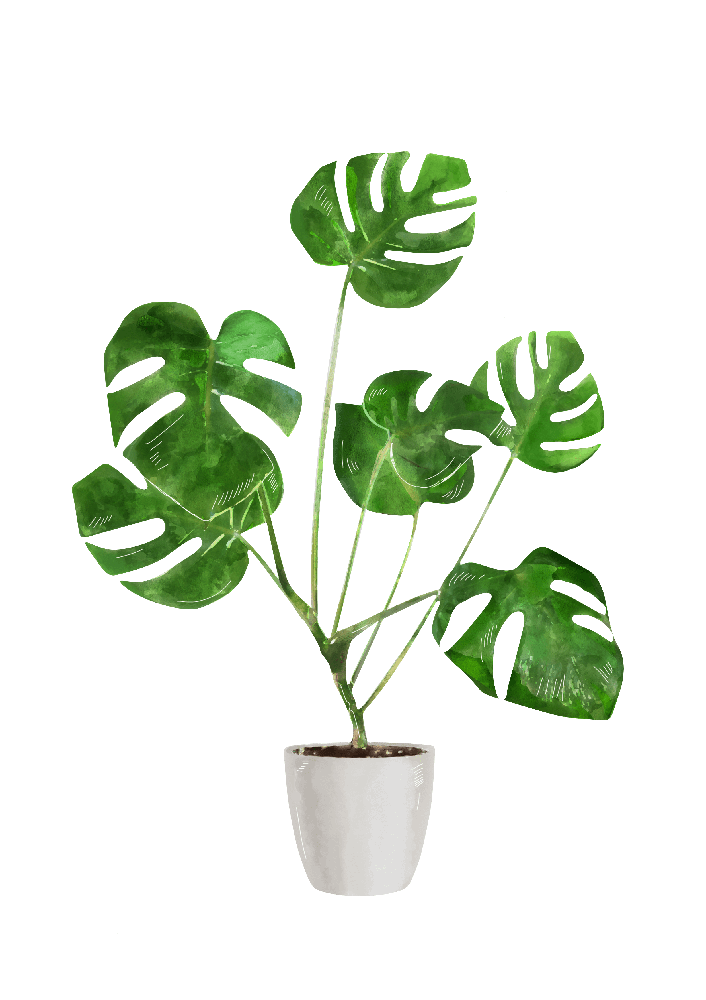
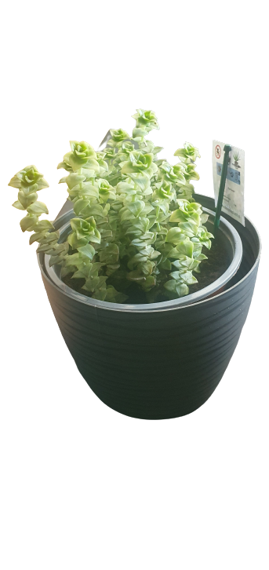
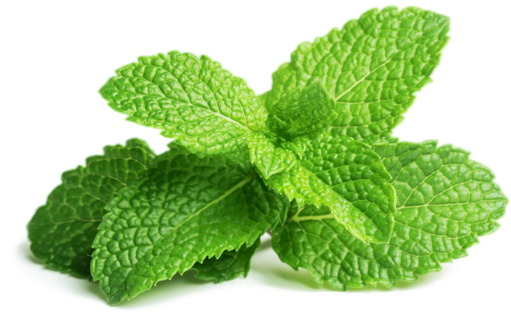
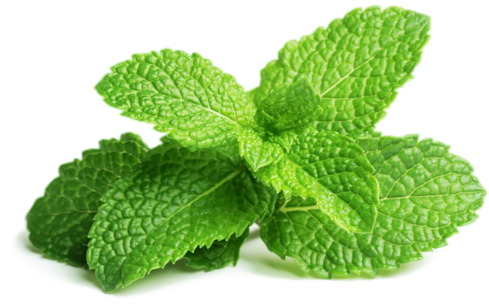

 


 




 



Bananowiec pochodzi z tropikalnych i subtropikalnych rejonów Azji płd-wsch (Półwysep Malajski) i Australii, skąd jego uprawa rozprzestrzeniła się na wyspy Pacyfiku oraz wybrzeża Oceanu Indyjskiego i Amerykę Południową i Środkową. Rodzaj bananowiec - Musa obejmuje kilkadziesiąt gatunków potężnych bylin (do 10 m wysokości). Z ich podziemnego, bulwiastego kłącza o licznych korzeniach przybyszowych, wyrasta nibyłodyga zbudowana ze ściśle przylegających do siebie pochew liściowych zakończona czubem liści kilkumetrowej długości, pojedynczych, często postrzępionych przez wiatr. Również owocostany są ogromne, nawet 2-3-metrowe. Rośliny dają dobrze nam znane owoce, które spożywa się na surowo lub przetwarza na mączki, soki i napoje alkoholowe.
Uprawa bananowca w domu może dostarczyć wiele satysfakcji, a ta niezwykła roślina egzotyczna niejednokrotnie nas zadziwi. Należy jednak pamiętać, że pielęgnacja bananowca rosnącego w doniczce wymaga przestrzegania ściśle określonych zasad uprawy i zapewnienia roślinie jak najlepszych warunków. Oto sekrety uprawy i pielęgnacji bananowca w domu!
Bananowce są roślinami klimatu gorącego (temperatura powyżej 20°C), jednostajnie wilgotnego, uprawianymi dzięki nawadnianiu. Nie lubią wiatru ze względu na słabe łodygi i kruche liście. Najlepszymi glebami do ich uprawy są gleby drobnoziarniste, piaszczysto-gliniaste, dobrze nawodnione.
Zapewnienie właściwych warunków uprawy bananowca karłowego w mieszkaniu wymaga nieco wysiłku. Przede wszystkim roślina potrzebuje jak najwięcej światła i dużej wilgotności. Doskonale będzie się czuła na przeszklonej werandzie. Jeżeli nie masz werandy, dla młodych, niewielkich egzemplarzy wystarczy parapet okna południowego. Potem, gdy już wyrosną, trzeba je umieścić jak najbliżej okna, w miejscu nasłonecznionym.
Prawidłowo pielęgnowany bananowiec, któremu w sposób mechaniczny nie uszkodziliśmy liści, nie powinien w zasadzie chorować. Jeżeli na liściach zaczną się pojawiać plamy - najczęściej świadczy to o tym, iż roślina przebywa w zbyt chłodnym i ciemnym miejscu oraz jest zbyt obficie podlewana.
Jeśli chodzi o szkodniki roślin doniczkowych to mogą pojawić się przędziorki. Ich występowaniu sprzyja zbyt mała wilgotność powietrza w domu.
Niestety bananowiec kwitnie tylko raz i potem obumiera. Dlatego bardzo ważne jest aby uzyskać z niego nowe egzemplarze, zanim będzie za późno. Bananowca możesz rozmnożyć z odrostów korzeniowych. Aby to zrobić, gdy owoce dojrzeją i liście zaczną żółknąć, usuń owocujący pęd. Powstające młode odrosty zaczną wtedy szybko rosnąć i staną się nowymi roślinami.
Zdobycie sadzonki bananowca może być trudne i za pewne będzie ona dość droga. Jako alternatywy, można spróbować uprawy z nasion. Nasiona bananowców mają bardzo twarde łupiny. Dlatego przed siewem należy lekko uszkodzić ich łupiny np. pocierając papierem ściernym, a następnie moczyć (ok. 72 godz.) w letniej wodzie.